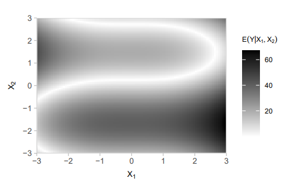

# Blibliotecas Python!pip install scikit-learnimport numpy as npimport pandas as pdimport matplotlib.pyplot as pltimport sympy as spimport mathimport timefrom scipy import statsfrom sklearn.linear_model import LinearRegressionfrom sklearn.preprocessing import PolynomialFeaturesfrom sklearn.metrics import mean_squared_errorfrom matplotlib.colors import LinearSegmentedColormapfrom copy import deepcopyfrom scipy.optimize import minimize
Requirement already satisfied: scikit-learn in c:\users\rebeca\appdata\local\programs\python\python313\lib\site-packages (1.7.2)
Requirement already satisfied: numpy>=1.22.0 in c:\users\rebeca\appdata\local\programs\python\python313\lib\site-packages (from scikit-learn) (2.3.3)
Requirement already satisfied: scipy>=1.8.0 in c:\users\rebeca\appdata\local\programs\python\python313\lib\site-packages (from scikit-learn) (1.16.2)
Requirement already satisfied: joblib>=1.2.0 in c:\users\rebeca\appdata\local\programs\python\python313\lib\site-packages (from scikit-learn) (1.5.2)
Requirement already satisfied: threadpoolctl>=3.1.0 in c:\users\rebeca\appdata\local\programs\python\python313\lib\site-packages (from scikit-learn) (3.6.0)
Contexto
Continuando o que foi feito na Lista 2, o objetivo desta é de avaliação da rede neural criada anteriormente. Para isso, vamos modificar um pouco as funções desenvolvidas em Python de modo a aprender maneiras mais eficientes computacionalmente (vamos traduzir as ideias da função do gabarito da Lista 2 para Pyhon).
Novamente, considere o conjunto de dados gerado na Lista 2:

Figure 1: Esperança condicional de Y
O código a seguir simula \(m=100.000\) observações desse processo (o arquivo foi gerado de maneira externa):
# Carregar os dados gerados no Rdados = pd.read_csv('dados.csv')print(f"Dados carregados: {len(dados)} observações")print(dados.head())
#Funções#sigmoidedef sigmoide(x):return1/ (1+ np.exp(-x))# Função para realizar o forward propagation dados Phi e xdef forward_prop(Phi, x, retornar_tudo=True):""" Função para realizar o forward propagation dados Phi e x Parâmetros: Phi: dicionário com pesos e biases {'W': list, 'b': list} x: dados de entrada (array ou matriz) retornar_tudo: se True retorna todos os valores intermediários Retorna: Se retornar_tudo=True: dicionário com y_hat, f, h Se retornar_tudo=False: apenas a previsão y_hat """# Organizando objetos num_camadas =2 f = [None] * num_camadas h = [None] * (num_camadas +1)# Funções de ativação a = [lambda z: 1/ (1+ np.exp(-z)), # sigmoidelambda z: z # identidade ]# Preparando entrada - CORRIGIDO para lidar com múltiplas amostrasiflen(x.shape) ==1: # se for vetor (uma amostra) h[0] = x.reshape(-1, 1) else: # se for matriz (múltiplas amostras) h[0] = x.T # (2, m) - mesma forma que na função vetorizada# Propagando pela redefor camada inrange(len(a)): f[camada] = Phi['b'][camada] + Phi['W'][camada] @ h[camada] h[camada +1] = a[camada](f[camada])# Previsão - CORREÇÃO CRÍTICA: retornar TODAS as previsões y_hat = h[-1].flatten() # (m,) - VETOR com todas as previsões# Outputif retornar_tudo:return {'y_hat': y_hat,'f': f,'h': h }else:return y_hat
#Outras funções:#Função para calcular a função de perdadef mse_cost(y_true, y_hat):return np.mean((y_true - y_hat) **2)# Função Derivada da Sigmoidedef derivada_sigmoide(x): sig =1/ (1+ np.exp(-x)) # sigmoide(x)return sig * (1- sig)#Função para realizar o back-propagation para um vetor theta, uma dada matriz design e as observaçõesdef back_prop(Phi, x, y):# Organizando os objetos aux = forward_prop(Phi, x, retornar_tudo=True)# Funções de derivada das ativações a_linha = [lambda z: derivada_sigmoide(z), lambda z: np.ones_like(z) # (1,1,1,1...) (sempre 1) ]# Inicializar gradientes Phi_grad = {'W': [None] *2, 'b': [None] *2 }### Implementação do back propagation# Gradiente inicial (derivada do MSE) g =-2* (y - aux['y_hat']) /len(y) ifhasattr(y, '__len__') else-2* (y - aux['y_hat']) #quando y é escalar# Backpropagationfor camada inrange(1, -1, -1): # começa no 1, para antes do último e decrementa de 1 em 1, ou seja, 1 > 0 # Aplicar derivada da função de ativação g = g * a_linha[camada](aux['f'][camada])# Garantir que g seja matriz iflen(g.shape) ==1: g = g.reshape(-1, 1)# Calcular gradientes para biases e pesos Phi_grad['b'][camada] = np.sum(g, axis=1, keepdims=True) Phi_grad['W'][camada] = g @ aux['h'][camada].T# Propagar gradiente para camada anterior (exceto na última iteração)if camada >0: g = Phi['W'][camada].T @ g grad_vector = np.concatenate([ Phi_grad['W'][0][0], # w1, w2 Phi_grad['W'][0][1], # w3, w4 Phi_grad['W'][1][0], # w5, w6 Phi_grad['b'][0].flatten(), # b1, b2 Phi_grad['b'][1].flatten() # b3 ])return grad_vector
Tempo backprop: 0.006243 segundos
GRADIENTE Conjunto de Treino:
gradientes = [ -0.18243468 0.63490074 -0.18243468 0.63490074 -22.29573326
-22.29573326 -1.07108422 -1.07108422 -43.32383571]
Shape do gradiente: (9,)
Tipo: <class 'numpy.ndarray'>
# Taxa de aprendizagemepsilon =0.1# Número de iteraçõesM =100# Lista para receber os parâmetros estimados em cada iteraçãoPhi_est = []# Theta inicial CORRIGIDOPhi_0 = {'W': [ np.zeros((2, 2)), # W0: (2, 2) np.zeros((1, 2)) # W1: (1, 2) ],'b': [ np.zeros((2, 1)), # b0: (2, 1) - AGORA é matriz coluna!0.0# b1: escalar ]}Phi_est.append(Phi_0)# Vetores para receber as perdas de treino e validaçãoperda_treino = np.zeros(M)perda_val = np.zeros(M)
# Função para atualizar parâmetros (equivalente ao map2 aninhado)def atualizar_parametros(Phi_atual, grad, epsilon): Phi_novo = {'W': [], 'b': []}# Atualizar pesos Wfor W_atual, grad_W inzip(Phi_atual['W'], grad['W']): Phi_novo['W'].append(W_atual - epsilon * grad_W)# Atualizar biases b for b_atual, grad_b inzip(Phi_atual['b'], grad['b']):ifisinstance(b_atual, np.ndarray) and b_atual.ndim >0:# Se for array (b0), manter como array Phi_novo['b'].append(b_atual - epsilon * grad_b.reshape(b_atual.shape))else:# Se for escalar (b1) Phi_novo['b'].append(b_atual - epsilon * grad_b)return Phi_novo# Execuçãofor i inrange(M):# Cálculo dos gradientes dos parâmetros grad_vector = back_prop(Phi=Phi_est[i], x=x_treino, y=y_treino) grad = {'W': [ grad_vector[:4].reshape(2, 2), # w1, w2, w3, w4 -> W0 grad_vector[4:6].reshape(1, 2) # w5, w6 -> W1 ],'b': [ grad_vector[6:8].reshape(2, 1), # b1, b2 -> b0 (AGORA como matriz coluna!) grad_vector[8] # b3 -> b1 ] }# Cálculo do custo de treino y_hat_treino = forward_prop(Phi_est[i], x_treino, retornar_tudo=False) perda_treino[i] = mse_cost(y_treino, y_hat_treino)# Cálculo do custo de validação y_hat_val = forward_prop(Phi_est[i], x_val, retornar_tudo=False) perda_val[i] = mse_cost(y_val, y_hat_val)# Atualização dos parâmetros Phi_novo = atualizar_parametros(Phi_est[i], grad, epsilon) Phi_est.append(Phi_novo)# Encontrar mínimosmin_perda_treino = np.min(perda_treino)min_perda_val = np.min(perda_val)Phi_til = Phi_est[np.argmin(perda_val)]
Teste da função e execução:
# Parâmetros iniciaisepsilon =0.1# Taxa de aprendizagemM =100# Número de iteraçõesphi_inicial = np.array([0.0, 0.0, 0.0, 0.0, 0.0, 0.0, 0.0, 0.0, 0.0])# Função para converter vetor para dicionário Phidef phi_vector_to_dict(phi_vector):"""Converte vetor de parâmetros para dicionário Phi""" w1, w2, w3, w4, w5, w6, b1, b2, b3 = phi_vectorreturn {'W': [ np.array([[w1, w2], [w3, w4]]), # W0 (2x2) np.array([[w5, w6]]) # W1 (1x2) ],'b': [ np.array([[b1], [b2]]), # b0 (2x1) np.array([[b3]]) # b1 (1x1) ] }# Função para converter dicionário Phi para vetordef phi_dict_to_vector(phi_dict): w1, w2 = phi_dict['W'][0][0] w3, w4 = phi_dict['W'][0][1] w5, w6 = phi_dict['W'][1][0] b1, b2 = phi_dict['b'][0].flatten() b3 =float(phi_dict['b'][1][0, 0]) # Converter para escalarreturn np.array([w1, w2, w3, w4, w5, w6, b1, b2, b3])# Converter phi_inicial para formato dicionárioPhi_est = [phi_vector_to_dict(phi_inicial)]# Vetores para armazenar as perdasperda_treino = np.zeros(M)perda_val = np.zeros(M)# Execução do algoritmofor i inrange(M):# Cálculo dos gradientes grad_vector = back_prop(Phi=Phi_est[i], x=x_treino, y=y_treino)# Converter gradiente vetor para dicionário grad = {'W': [ grad_vector[:4].reshape(2, 2), # w1, w2, w3, w4 -> W0 grad_vector[4:6].reshape(1, 2) # w5, w6 -> W1 ],'b': [ grad_vector[6:8].reshape(2, 1), # b1, b2 -> b0 grad_vector[8] # b3 -> b1 ] }# Cálculo do custo de treino y_hat_treino = forward_prop(Phi_est[i], x_treino, retornar_tudo=False) perda_treino[i] = mse_cost(y_treino, y_hat_treino)# Cálculo do custo de validação y_hat_val = forward_prop(Phi_est[i], x_val, retornar_tudo=False) perda_val[i] = mse_cost(y_val, y_hat_val)# Atualização dos parâmetros Phi_novo = atualizar_parametros(Phi_est[i], grad, epsilon) Phi_est.append(Phi_novo)# Encontrar mínimosmin_perda_treino = np.min(perda_treino)min_perda_val = np.min(perda_val)melhor_idx_val = np.argmin(perda_val)Phi_til = Phi_est[melhor_idx_val]# Converter Phi_til de volta para vetormelhor_phi_vector = phi_dict_to_vector(Phi_til)# Resultadosprint("RESULTADOS DO TREINAMENTO")print(f"Melhor iteração (validação): {melhor_idx_val}")print(f"Menor perda de treino: {min_perda_treino:.6f}")print(f"Menor perda de validação: {min_perda_val:.6f}")print(f"\nMelhores parâmetros (vetor):")print(f"w1, w2, w3, w4: {melhor_phi_vector[:4]}")print(f"w5, w6: {melhor_phi_vector[4:6]}")print(f"b1, b2: {melhor_phi_vector[6:8]}")print(f"b3: {melhor_phi_vector[8]:.6f}")print(f"\nParâmetros completos: {melhor_phi_vector}")
RESULTADOS DO TREINAMENTO
Melhor iteração (validação): 17
Menor perda de treino: 145.891612
Menor perda de validação: 149.400522
Melhores parâmetros (vetor):
w1, w2, w3, w4: [-0.75778832 -2.40989992 -0.75778832 -2.40989992]
w5, w6: [8.2280801 8.2280801]
b1, b2: [2.17300733 2.17300733]
b3: 11.388254
Parâmetros completos: [-0.75778832 -2.40989992 -0.75778832 -2.40989992 8.2280801 8.2280801
2.17300733 2.17300733 11.38825398]
Início Resolução Lista 3
Item A.
Calcule os valores previstos (\(\hat{y}_i\)) e os resíduos (\(y_i-\hat{y}_i\)) da rede no conjunto de teste e represente-os graficamente em função de \(X_1\) e \(X_2\).
A partir do gráfico usado para visualização da superfície \((E(Y|X_1, X_2), X_1, X_2)\) e usando pontos semi-transparentes, temos:
Por conta da definição vetorial de forward_prop, y_hat_teste será um vetor cujas coordenadas são todas as saídas propagadas pela rede com parâmetros Phi_til. Logo, residuos_teste será um vetor com \(10.000\) entradas, cada uma mostrando o resíduo no conjunto de teste naquele exemplo, ou seja, a diferença da predição e do valor verdadeiro.
Na lista 2 não tínhamos gerado em Python o gráfico para visualização da superfície \((E(Y|X_1, X_2), X_1, X_2)\) (estava em R), então vamos fazer esse passo a seguir (e adicionar os detalhes necessários para a visualização):
plt.figure(figsize=(8, 6))sc2 = plt.scatter(resultados_teste['x1'], resultados_teste['x2'], c=resultados_teste['residuo'], cmap='RdBu_r', alpha=0.6, s=2, vmin=-np.max(np.abs(residuos_teste)), vmax=np.max(np.abs(residuos_teste)))plt.colorbar(sc2, label='Resíduo (y - ŷ)')plt.xlabel('X₁', fontsize=10)plt.ylabel('X₂', fontsize=10)plt.title('Resíduos no conjunto de teste', fontsize=11)plt.grid(True, alpha=0.3)plt.show()
plt.figure(figsize=(8, 6))sc1 = plt.scatter(resultados_teste['x1'], resultados_teste['x2'], c=resultados_teste['y_previsto'], cmap='viridis', alpha=0.6, s=2)plt.colorbar(sc1, label='ŷ (Valor Previsto)')plt.xlabel('X₁')plt.ylabel('X₂')plt.title('Predição ŷ no conjunto de teste')plt.grid(True, alpha=0.3)plt.show()
Pelo gráfico acima, podemos observar as seguintes características temos predições maiores para valores grandes de \(X_1\) e \(X_2\) e valores menores quando \(X_1\) e \(X_2\) são pequenos. Além disso, para \(X_2\) pequeno pequeno, independentemente dos valores de \(X_2\), o valor predito é pequeno. O mesmo acontece com valores grandes de \(X_2\).
Já no gráfico de resíduos, podemos observar as seguintes características:
No “S” superior, os valores parecem estar mais claros, ou seja, o resíduo é menor e a predição melhor. Na parte superior do gráfico (não só em cima do “S”), para \(X_2\) maior que \(0.8\) e \(X_1\) maior que \(-2\) a predição parece ser boa.
Ainda sobre a parte superior do gráfico, para valores de \(X_2\) menores que \(-2\) os resíduos são relativamente grandes, ou seja, o valor real é consideravelmente maior que o predito. Note que não é um resíduo aleatório, pois para todos os pontos dessa região o modelo “erro” para menos de maneira sistemática.
Na parte central do “S” os pontos ficam mais escuros e azuis, ou seja, o modelo erra de maneira sistemática para baixo (valor predito muito maior que o real). Novamente, erro nao aleatório/sistemática, dados que para todos os pontos dessa região o modelo se comporta dessa forma.
Note que nas vizinhanças do “S”, ou seja, não exatamente na linha central dessa curva, as cores azuis se suavizam e essa é a região mais clara do gráfico, ou seja, onde o modelo se comporta melhor no conjunto de teste.
Para \(X_1\) grande e \(X_2\) negativos temos novamente um erro sistemático, pois são os pontos com cores mais escuras (nesse caso vermelhas) indicando que é a região que o modelo erra mais e todos os pontos de erro são com a predição substimando muito o valor real.
Ou seja, aparentemente quando \(X_1\) é central (módulo não tão grande), tirando a região central, o modelo parece de comportar bem.
Caso a gente queira tratar o problema de forma mais sistemática considerando as observações visuais que notamos anteriormente:
# Análise quantitativa por regiões específicasdef analisar_regioes_especificas(resultados):# região com X_1 central sem valor de X_2 > 1: mask_1 = (resultados['x2'] >1) & (np.abs(resultados['x1']) <2) residuo_s = resultados[mask_1]['residuo']print(f"\n1. região com X_1 central sem valor de X_2 > 1")print(f" N pontos: {len(residuo_s)}")print(f" Viés médio: {np.mean(residuo_s):.4f}")# região com X_1 central sem valor de X_2 <-0.8: mask_2 = (resultados['x2'] <-0.8) & (np.abs(resultados['x1']) <2) residuo_s = resultados[mask_2]['residuo']print(f"\n1. região com X_1 central sem valor de X_2 <-0.8")print(f" N pontos: {len(residuo_s)}")print(f" Viés médio: {np.mean(residuo_s):.4f}")# X_2 próximo de 0 e X_1 menor que 2 mask_3 = (resultados['x1'] <2) & (np.abs(resultados['x2']) <1) residuo_neg = resultados[mask_3]['residuo']print(f"\n2. X_2 próximo de 0 e X_1 menor que 2:")print(f" N pontos: {len(residuo_neg)}")print(f" Viés médio: {np.mean(residuo_neg):.4f}") # X_1 grande e X_2 negativo mask_4 = (resultados['x1'] >2) & (resultados['x2'] <-0.5) residuo_boa = resultados[mask_4]['residuo']print(f"\n3. X_1 grande e X_2 negativo:")print(f" N pontos: {len(residuo_boa)}")print(f" Viés médio: {np.mean(residuo_boa):.4f}")analisar_regioes_especificas(resultados_teste)
1. região com X_1 central sem valor de X_2 > 1
N pontos: 2233
Viés médio: -0.0693
1. região com X_1 central sem valor de X_2 <-0.8
N pontos: 2404
Viés médio: 5.0938
2. X_2 próximo de 0 e X_1 menor que 2:
N pontos: 2784
Viés médio: -10.0167
3. X_1 grande e X_2 negativo:
N pontos: 685
Viés médio: 21.6789
Ao analisar as regiões acima, notamos que a primeira delas é uma região onde o modelo performa bem (parte central de \(X_1\) com raio \(2\) exceto a região de \(X_2\) em torno de zero) e que o vies é menor. Além disso, a região inferior direita tem valores altos positivos (e a superior esquerda também) e além disso a região central tem valores negativos para o resíduo.
Análise em “S’ usando uma aproximação polinomial:
def encontrar_curva_s(resultados, grau=3):# Identificar pontos do S (resíduos muito negativos = azul escuro) limiar_residuo = np.percentile(resultados['residuo'], 10) # 10% mais negativos mask_s_points = resultados['residuo'] < limiar_residuo# Filtrar só a região superior onde está o S mask_s_region = mask_s_points & (resultados['x2'] >0.5) & (resultados['x2'] <2.0) pontos_s = resultados[mask_s_region]iflen(pontos_s) <10:print("Poucos pontos para ajuste do S")returnNone# Ajustar polinômio: X₂ em função de X₁ x1_s = pontos_s['x1'].values x2_s = pontos_s['x2'].values# Ajustar polinômio de grau 'grau' coeficientes = np.polyfit(x1_s, x2_s, grau) polinomio_s = np.poly1d(coeficientes)print(f"POLINÔMIO DO S (grau {grau}):")print(f" X₂ = {coeficientes[0]:.4f}·X₁³ + {coeficientes[1]:.4f}·X₁² + {coeficientes[2]:.4f}·X₁ + {coeficientes[3]:.4f}")return polinomio_s, pontos_s# Encontrar a curvaresultado_curva = encontrar_curva_s(resultados_teste, grau=3)if resultado_curva isnotNone: polinomio_s, pontos_ajuste = resultado_curvaelse:# Fallback: curva manual baseada na visualizaçãoprint("Usando curva manual...") polinomio_s = np.poly1d([0.4, 0, -0.3, 1.4]) # X₂ = 0.4·X₁³ - 0.3·X₁ + 1.4
POLINÔMIO DO S (grau 3):
X₂ = 0.0201·X₁³ + -0.0019·X₁² + -0.0405·X₁ + 0.5387
def plotar_mapa_vies_simples(resultados, n_bins=30):# Criar grid 2D x1_bins = np.linspace(-3, 3, n_bins) x2_bins = np.linspace(-3, 3, n_bins)# Calcular viés médio por bin vies_grid = np.full((n_bins-1, n_bins-1), np.nan)for i inrange(n_bins-1):for j inrange(n_bins-1): mask_bin = ( (resultados['x1'] >= x1_bins[i]) & (resultados['x1'] < x1_bins[i+1]) & (resultados['x2'] >= x2_bins[j]) & (resultados['x2'] < x2_bins[j+1]) )if mask_bin.sum() >5: # Mínimo de pontos vies_grid[i, j] = np.mean(resultados[mask_bin]['residuo'])# Plotar apenas o mapa de viés plt.figure(figsize=(8, 6)) im = plt.imshow(vies_grid.T, extent=[-3, 3, -3, 3], origin='lower', cmap='RdBu_r', aspect='auto', vmin=-8, vmax=8) plt.colorbar(im, label='Viés Médio', shrink=0.8) plt.xlabel('X₁') plt.ylabel('X₂') plt.title('Mapa de Viés por Região\n(Azul = Superestima, Vermelho = Subestima)')# Adicionar grade plt.grid(True, alpha=0.3) plt.tight_layout() plt.show()# Gerar só o gráfico do mapa de viésplotar_mapa_vies_simples(resultados_teste)
Acima vemos que, apesar do “S” aproximado contemplar pontos com um tom de azul mais “claro” no gráfico de dispersão anterior, o modelo ainda erra sistematicamente para baixo, ou seja, em cima do “S” ainda há viés.
Além disso, uma ideia que pode ser implementada (não tive tempo de entender exatamente como faria isso) seria considerar a área do “S” numa vizinhança maior e retirar a parte central do “S”. Dessa forma seria possível capturar as vizinhanças um pouco mais distantes, pontos nos quais o modelo acerta (pontos brancos).
Item B.
Faça um gráfico do valor observado (\(y_i\)) em função do valor esperado (\(\hat{y}_i=E(Y_i|x_{1i}, x_{2i})\)) para cada observação do conjunto de teste. Interprete o resultado.
# Folha de estiloplt.style.use("ggplot")plt.rc("axes", facecolor="#fafafa", grid=True) plt.rc("grid", color="#f0f0f0") plt.figure(figsize=(8, 6))plt.scatter(resultados_teste['y_previsto'], resultados_teste['y_real'], alpha=0.5, s=1, color='blue')# Linha vermelhamin_val =min(resultados_teste['y_real'].min(), resultados_teste['y_previsto'].min())max_val =max(resultados_teste['y_real'].max(), resultados_teste['y_previsto'].max())plt.plot([min_val, max_val], [min_val, max_val], 'r--', linewidth=2, label='Linha de perfeita previsão')plt.xlabel('Valor Predito (ŷ)', fontsize=12)plt.ylabel('Valor Observado (y)', fontsize=12)plt.title('Valores observados vs preditos\nno Conjunto de Teste', fontsize=14)plt.legend()plt.xlim(10, 30)plt.grid(True, alpha=0.3)plt.tight_layout()plt.show()
Pelo gráfico acima, podemos observar que para valores preditos que se encontram entre \(15\) e \(26\) aproximadamente, parece haver uma dispersão maior. Para valores de predição até aproximadamente \(15\), parece ter uma concentração de pontos que forma um padrão parabólico com a concavidade para baixo (ou algo de natureza semelhante). Não há tanta dispersão de pontos muito acima ou muito abaixo da linha (aparentemente a maioria dos pontos se encontra \(10\) para cima ou para baixo da reta perfeita \(y=x\)).
Além disso, no ínfimo e supremo dos valores preditos, parece se formar uma linha vertical com uma concentração grande de pontos. Considerando agora apenas pontos próximos da linha \(y=x\), podemos ver que essa concentração é maior na vizinhança de valores preditos próximos de \(12.5\) e próximos de \(27.5\). Porém quando maior é o valor predito, maior a probabilidade de encontrar pontos muito distantes do valor observado (pois há muitos pontos acima da reta $y=x).
Concluindo, há uma certa tendência crescente nos pontos que acompanham a reta \(x=y\), mas a dispersão se comporta de maneira diferente nas regiões centrais e nas bordas do gráfico. A nuvem de dispersão parece mais larga em algumas partes do gráfico, o modelo parece ser mais preciso em partes específicas.
O cenário ideal seria um viés baixo e dispersão baixa. No nosso caso, nos pontos iniciais temos um comportamento não-linear específico, com o viés menor que em outras partes do gráfico. Nos valores médios temos alta dispersão, ou seja, para um mesmo valor predito temos valores reais muito diferentes e vies moderado. Para valores maiores que \(26\) a linha vertical sugere que o modelos está “chutando” valores, talvez por falta de pontos de treinamento nessa região mais extrema.
Item C.
Para cada \(k=2, \ldots, 300\), recalcule o gradiente obtido no item d) usando apenas as \(k\)-primeiras observações do banco de treinamento. Novamente, use \(\Phi=\Phi^\star\).
k_values =range(2, 301)gradientes_k = []primeiro_elemento_grad = []for k in k_values:#k primeiras observações do treino x_k = x_treino[:k] y_k = y_treino[:k] grad_vector = back_prop(Phi=Phi_estrela, x=x_k, y=y_k) gradientes_k.append(grad_vector) primeiro_elemento_grad.append(grad_vector[0]) if k %50==0: #printando alguns valores (medo)print(f"k = {k}: {grad_vector}")
Apresente um gráfico com o valor do primeiro elemento do gradiente (isso é, a derivada parcial \(\frac{\partial J}{\partial w_1}\)) em função do número de amostras \(k\). Como referência, adicione uma linha horizontal vermelha indicando o valor obtido na Lista 2, item d).
Valor de referência da lista 2:
gradiente_lista2 = np.array([-0.18243468, 0.63490074, -0.18243468, 0.63490074, -22.29573326, -22.29573326, -1.07108422, -1.07108422, -43.32383571])valor_referencia = gradiente_lista2[0] print(f"Valor de referência da Lista 2: ∂J/∂w₁ = {valor_referencia:.6f}")
Valor de referência da Lista 2: ∂J/∂w₁ = -0.182435
# Criar o gráfico# Folha de estiloplt.style.use("ggplot")plt.rc("axes", facecolor="#fafafa", grid=True) plt.rc("grid", color="#f0f0f0") plt.figure(figsize=(12, 6))plt.plot(k_values, primeiro_elemento_grad, 'b-', linewidth=1.5, alpha=0.8, label='∂J/∂w₁ em função de k')plt.axhline(y=valor_referencia, color='red', linestyle='--', linewidth=2, label=f'Referência Lista 2: ∂J/∂w₁ = {valor_referencia:.6f}')plt.xlabel('Número de Amostras (k)', fontsize=12)plt.ylabel('∂J/∂w₁', fontsize=12)plt.title('Convergência do Gradiente vs do Tamanho da Amostra\n(Primeiro elemento: ∂J/∂w₁)', fontsize=12)plt.legend(fontsize=11)plt.grid(True, alpha=0.3)# Adicionar alguns pontos de referência no gráficoplt.axvline(x=50, color='gray', linestyle=':', alpha=0.5)plt.axvline(x=100, color='gray', linestyle=':', alpha=0.5)plt.axvline(x=200, color='gray', linestyle=':', alpha=0.5)plt.tight_layout()plt.show()
Em seguida, use a função microbenchmark (vamos utilizar outra em Python) para comparar o tempo de cálculo do gradiente para \(k=300\) e \(k=80000\). Explique de que maneira os resultados dessa análise podem ser usados para acelerar a execução do item e) da Lista 2.
# Função para medir tempo do gradientedef medir_tempo_gradiente(Phi, x, y, n_repeticoes=10): tempos = []for _ inrange(n_repeticoes): start_time = time.time() _ = back_prop(Phi, x, y) end_time = time.time() tempos.append(end_time - start_time)return np.mean(tempos), np.std(tempos)# Comparação de tempos# k = 300x_k300 = x_treino[:300]y_k300 = y_treino[:300]# k = 80000 x_k80000 = x_treino[:80000]y_k80000 = y_treino[:80000]# Medir tempostempo_300, std_300 = medir_tempo_gradiente(Phi_estrela, x_k300, y_k300)tempo_80000, std_80000 = medir_tempo_gradiente(Phi_estrela, x_k80000, y_k80000)print(f"k = 300:")print(f" Tempo médio: {tempo_300:.6f} ± {std_300:.6f} segundos")print(f" Amostras: {len(x_k300)}")print(f"\nk = 80000:")print(f" Tempo médio: {tempo_80000:.6f} ± {std_80000:.6f} segundos") print(f" Amostras: {len(x_k80000)}")# Razão de temporazao_tempo = tempo_80000 / tempo_300print(f"\nRazão de tempo (80000/300): {razao_tempo:.2f}x")print(f"k=80000 é {razao_tempo:.1f} vezes mais lento que k=300")
k = 300:
Tempo médio: 0.000084 ± 0.000023 segundos
Amostras: 300
k = 80000:
Tempo médio: 0.005909 ± 0.000233 segundos
Amostras: 80000
Razão de tempo (80000/300): 70.07x
k=80000 é 70.1 vezes mais lento que k=300
No gráfico acima, note que a medida que o número \(k\) cresce, a primeira coordenada do gradiente vai se aproximando de \(-0.182435\), que é o valor referente a \(k=80000\). A partir da amostra de tamanho \(k=100\), o gráfico parece ficar mais próximo da linha vermelha e depois de \(k=150\) aparenta estar próximo e sempre abaixo.
Além disso, para \(k=8000\), o tempo é aproximadamente \(63\) vezes maior que para \(k=300\). Uma possível maneira de acelerar a execução do item e) é, em cada iteração, em vez de usar o dataset de treinamento completo, usar mini-batches de tamanho menor, por exemplo, 300. Esse tipo de análise pode ser feita para ajudar a definir uma tamanho de batch que faça sentido em cada problema. Como o gradiente aparentemente já convergiria com \(k=300\) isso faria com que cada iteração fosse aproximadamente \(63\) mais rápida. Observe também que o tempo não age de maneira linear considerando a quantidade de exemplos pois alguns algoritmos trabalham de maneira otimizada com mais dados disponíveis.
Item D.
Ajuste sobre o conjunto de treinamento um modelo linear normal (modelo linear 1) \[
Y_i \sim N(\beta_0 + \beta_1 x_{1i} + \beta_2 x_{2i}, \sigma^2)
\] usando a função lm do pacote R (usaremos funções para Python).
Em seguida, inclua na lista de covariáveis termos quadráticos e de interação linear. Isso é, assuma que no modelo linear 2, \[
E(Y|x_1, x_2) = \beta_0 + \beta_1 x_1 + \beta_2 x_2 + \beta_3 x_1^2 + \beta_4 x_2^2 + \beta_5 x_1 x_2.
\]
Compare o erro quadrático médio no conjunto de teste dos dois modelos lineares acima com o da rede neural ajustada anteriormente. Qual dos 3 modelos você usaria para previsão? Justifique sua resposta.
print("\nREDE NEURAL")print("\nMelhores parâmetros encontratos em e) da lista 2:")print(melhor_phi_vector)y_pred_rn_teste = forward_prop(Phi_til, x_teste, retornar_tudo=False)mse_rn_teste = mse_cost(y_teste, y_pred_rn_teste)y_pred_rn_treino = forward_prop(Phi_til, x_treino, retornar_tudo=False)mse_rn_treino = mse_cost(y_treino, y_pred_rn_treino)print(f"MSE Treino: {mse_rn_treino:.6f}")print(f"MSE Teste: {mse_rn_teste:.6f}")
REDE NEURAL
Melhores parâmetros encontratos em e) da lista 2:
[-0.75778832 -2.40989992 -0.75778832 -2.40989992 8.2280801 8.2280801
2.17300733 2.17300733 11.38825398]
MSE Treino: 146.200546
MSE Teste: 147.452408
COMPARAÇÃO FINAL DOS MODELOS
Modelo MSE Treino MSE Teste Diferença (Teste-Treino) \
0 Linear 1 139.449421 141.014429 1.565008
1 Linear 2 95.341862 95.778722 0.436859
2 Rede Neural 146.200546 147.452408 1.251862
Número Parâmetros
0 3
1 6
2 9
Considerando a análise acima, note que para a rede neural, como já tínhamos mostrado anteriormente, temos \(9\) parâmetros e a menor perda possível considerando o parâmetro inicial escolhido é de \(147.452408\) no conjunto de teste, com uma diferença de \(1.251862\) entre treino e teste.
Ao analisarmos os modelos lineares, vemos que o Modelo 1 parece não ter complexidade suficiente para capturar os padrões necessários (3 parâmetros) quando o comparamos com o segundo modelo Linear. Note também que, no modelo linear 1, a perda não é tão diferente da rede neural ajustada (MSE de teste é até melhor que a da rede neural: \(141.014429\) em comparação a \(147.452408\)) e um modelo linear é bem menos complexo de treinar (e possivelmente mais rápido).
O melhor modelo seria o modelo 2, cujo MSE (perda) tem uma diminuição significativa com relação à Rede Neural e ao Modelo Linear 1 (MSE Teste: \(95.778722\)). Além disso, tem menos parâmetros e generaliza melhor que os outros dois modelos (diferença (Teste-Treino): 0.436859).
Possíveis motivos para esse resultados: pode ser que o ponto de inicialização da rede não seja a melhor das opções e por isso a rede não esteja conseguindo chegar à uma boa performance considerando o número de iterações. Pode ser também que a estrutura da rede neural (em termos dos hyperparâmetros) não seja ideal (quantidade de neurônios e camadas). Note que, no modelo linear 2, mesmo sendo um modelo simples de poucos parâmetros, os termos \({X_1}^2\), \({X_2}^2\) e \(X_1X_2\) conseguem modelar algumas das relações não-lineares.
Concluindo, usaria o modelo dois para previsão, pois a perda é menor e ele generaliza melhor que os outros dois.
Item E.
Para cada modelo ajustado (os dois lineares e a rede neural), descreva o efeito no valor esperado da variável resposta causado por um aumento de uma unidade da covariável \(x_1\)?
Vamos considerar, primeiro, o Modelo Linear 1 já ajustado e entender os efeitos do aumento de uma unidade da covariável \(x_1\):
dados2 = dados.copy()dados2['x1.obs'] = dados2['x1.obs'] +1print("Primeiras linhas do original:")print(dados[['x1.obs', 'x2.obs', 'y']].head())print("Primeiras linhas do dados2 (x₁ + 1):")print(dados2[['x1.obs', 'x2.obs', 'y']].head())# Conjunto de teste com x1 + 1test_set2 = dados2.iloc[90000:100000]x_teste2 = test_set2[['x1.obs', 'x2.obs']].valuesy_teste2 = test_set2['y'].values
Primeiras linhas do original:
x1.obs x2.obs y
0 1.363870 -0.833639 35.120982
1 1.960455 0.463564 4.331141
2 -1.848304 0.110323 0.596088
3 -2.036404 -2.115443 27.625098
4 1.812387 -1.917255 43.690597
Primeiras linhas do dados2 (x₁ + 1):
x1.obs x2.obs y
0 2.363870 -0.833639 35.120982
1 2.960455 0.463564 4.331141
2 -0.848304 0.110323 0.596088
3 -1.036404 -2.115443 27.625098
4 2.812387 -1.917255 43.690597
Modelo Linear 1:
Um exemplo:
11.386540238221453
12.60873103029847
Efeito prático médio: 1.222191
No primeiro modelo linear, um aumento em \(X_1\) tem o efeito constante de aumentar \(\beta_1\) unidades no valor esperado da variável resposta, considerando que não estamos retreinando o modelo (temos o valor de \(\beta_1\) já fixo). A diferença entre \(11.3865\) e \(12.6087\) é exatamente \(1.2222\), que é o valor do \(\beta_1\).
Modelo Linear 2:
Um exemplo:
15.50314286133672
11.24132495375435
Efeito prático médio: 1.944156
O efeito no modelo 2 é não é simplesmente aditivo. Considerando a expressão álgébrica do modelo \(2\), vemos que a diferença entre o valor original e o valor quando adicionamos \(1\) em \(X_1\) tem tamanho \(\beta_0+ 2 \beta_3X_1 + \beta_5X_2\), ou seja, não é constante, depende dos pontos. O efeito médio prático dessa mudança é de \(1.944156\). Ou seja, em algumas regiões do plano o efeito dessa mudança pode ser maior.
Concluindo, para o Modelo 1, a mudança sempre altera o valor esperado em uma unidade, independentemente da região e a média dessa mudança no conjunto de teste é de \(1.222191\). Já no Modelo 2, a mudança depende da região do plano em que consideramos e, no conjunto de teste, essa mudança é em média \(1.944156\), um pouco maior. Na rede neural ajustada, não conseguimos entender exatamente o efeito em termos algébricos, pois a função tem várias etapas/funções de ativação. Essa relação é adaptativa e varia de maneira bem mais complexa dependendo da região do plano. Ou seja, por mais que a função de perda seja melhor no modelo 2, a rede neural consegue reagir melhor á mudanças e ruídos nas variáveis (que é algo que frequentemente acontece, considerando erros nos dados, escalas e outras questões). Ou seja, faz sentido tentar usar outros tipos de inicialização, por exemplo, pois a rede neural (num contexto real) provavelmente vai generalizar melhor e capturar os padrões mais complexos. A adição de ruído no treinamento, como vimos em sala, pode fazer sentido para melhorar a generalização da rede.
Item E.
Novamente, para cada um dos 3 modelos em estudo, calcule o percentual de vezes que o intervalo de confiança de 95% (para uma nova observação!) capturou o valor de \(y_i\). Considere apenas os dados do conjunto de teste. No caso da rede neural, assuma que, aproximadamente, \(\frac{y_i - \hat{y}}{\hat{\sigma}} \sim N(0, 1)\), onde \(\hat{\sigma}\) representa a raiz do erro quadrático médio da rede no conjunto de validação. Comente os resultados. Dica: para os modelos lineares, use a função predict(mod, interval="prediction").
Vamos começar com os modelos lineares.
Intervalo de Predição é um intervalo que estima onde deve cair uma nova observação individual Y, dados os valores de X, ou seja, uma “faixa de valores” onde Y provavelmente estará, com 95% de confiança. Como não temos, no Python, uma função direta que faça esse cálculo, vamos precisar fazer manualmente:
# Função para calcular intervalos de predição manualmentedef intervalo_predicao_linear(X, beta, residuos, alpha=0.05): n =len(residuos) p =len(beta)# Erro padrão da predição X_design = np.column_stack([np.ones(len(X)), X]) if X.shape[1] ==2else X# MSE dos resíduos mse = np.var(residuos, ddof=p)# Erro padrão para cada predição se_pred = np.sqrt(mse * (1+ np.diag(X_design @ np.linalg.inv(X_design.T @ X_design) @ X_design.T)))# Valor t t_val = stats.t.ppf(1- alpha/2, n - p)# Predições y_pred = X_design @ beta# Intervalos lower = y_pred - t_val * se_pred upper = y_pred + t_val * se_predreturn y_pred, lower, upper
Rede neural seguinte a dica indicada no exercício, ou seja, assuma que, aproximadamente, \(\frac{y_i - \hat{y}}{\hat{\sigma}} \sim N(0, 1)\), onde \(\hat{\sigma}\) representa a raiz do erro quadrático médio da rede no conjunto de validação.
Rede Neural
RMSE validação: 12.222951
Percentual de cobertura: 94.63%
Embora os modelos apresentem uma cobertura próxima do esperado, o Modelo 2 tem intervalos possivelmente muito “conservadores”, dado que o percentual de cobertura: 96.91%. É possível que a função manual que produzimos em Python também não seja 100% equivalente à função sugerida (em R).
Considerando todas as informações que temos até então:
print("COMPARAÇÃO DOS MODELOS")print("="*55)print(f"{'CRITÉRIO':<18}{'LINEAR 1':<10}{'LINEAR 2':<10}{'REDE NEURAL':<12}")print("-"*55)print(f"{'Cobertura IP':<18}{'95.34%':<10}{'96.91%':<10}{'94.63%':<12}")print(f"{'MSE Teste':<18}{'141.01':<10}{'95.78*':<10}{'147.45':<12}")print(f"{'Parâmetros':<18}{'3*':<10}{'6':<10}{'9':<12}")print(f"{'Interpretabilidade':<18}{'Alta*':<10}{'Média':<10}{'Baixa':<12}")
COMPARAÇÃO DOS MODELOS
=======================================================
CRITÉRIO LINEAR 1 LINEAR 2 REDE NEURAL
-------------------------------------------------------
Cobertura IP 95.34% 96.91% 94.63%
MSE Teste 141.01 95.78* 147.45
Parâmetros 3* 6 9
Interpretabilidade Alta* Média Baixa
Considerando a maneira que a rede neural foi treinada e o modelo que estamos trabalhando, é possível concluir que ela não seria a melhor opção para esse caso específico. A rede neural captura alguns padrões e não é tão sensível a mudanças lineares em \(X_1\), como mostramos, mas o Modelo Linear 2 ainda tem benefícios maiores considerando todos os fatores analisanos nas questões anteriores.
Item F.
Para o modelo linear 2, faça um gráfico de dispersão entre \(x_1\) e \(x_2\), onde cada ponto corresponde a uma observação do conjunto de teste. Identifique os pontos que estavam contidos nos respectivos intervalos de confianças utilizando a cor verde. Para os demais pontos, use vermelho. Comente o resultado.
print("GRÁFICO DE DISPERSÃO - MODELO LINEAR 2")# Identificar quais pontos foram capturados pelos intervalospontos_capturados = (y_teste >= lower2) & (y_teste <= upper2)pontos_nao_capturados =~pontos_capturadosprint(f"Pontos capturados: {np.sum(pontos_capturados)}/{len(y_teste)} ({np.mean(pontos_capturados)*100:.2f}%)")print(f"Pontos não capturados: {np.sum(pontos_nao_capturados)}/{len(y_teste)} ({np.mean(pontos_nao_capturados)*100:.2f}%)")# Criar o gráfico de dispersãoplt.figure(figsize=(12, 8))# Plotar pontos capturados (verde)plt.scatter(x_teste[pontos_capturados, 0], x_teste[pontos_capturados, 1], c='#90EE90', alpha=0.6, s=20, label=f'Capturados ({np.sum(pontos_capturados)} pontos)')# Plotar pontos não capturados (vermelho)plt.scatter(x_teste[pontos_nao_capturados, 0], x_teste[pontos_nao_capturados, 1], c='red', alpha=0.8, s=30, label=f'Não Capturados ({np.sum(pontos_nao_capturados)} pontos)')plt.xlabel('x₁')plt.ylabel('x₂')plt.title('Modelo Linear 2 - Pontos Capturados pelos Intervalos de Predição 95%\n'f'Cobertura: {cobertura2*100:.2f}%')plt.legend()plt.grid(True, alpha=0.3)plt.tight_layout()plt.show()# Análise adicional por regiõesprint("ANÁLISE POR REGIÕES")# Dividir o espaço em quadrantes para análisex1_median = np.median(x_teste[:, 0])x2_median = np.median(x_teste[:, 1])regioes = {'Q1 (x₁ baixo, x₂ baixo)': (x_teste[:, 0] < x1_median) & (x_teste[:, 1] < x2_median),'Q2 (x₁ alto, x₂ baixo)': (x_teste[:, 0] >= x1_median) & (x_teste[:, 1] < x2_median),'Q3 (x₁ baixo, x₂ alto)': (x_teste[:, 0] < x1_median) & (x_teste[:, 1] >= x2_median),'Q4 (x₁ alto, x₂ alto)': (x_teste[:, 0] >= x1_median) & (x_teste[:, 1] >= x2_median)}for regiao, mascara in regioes.items(): cobertura_regiao = np.mean(pontos_capturados[mascara]) *100 n_pontos = np.sum(mascara)print(f"{regiao}: {cobertura_regiao:.2f}% ({np.sum(pontos_capturados[mascara])}/{n_pontos} pontos)")
GRÁFICO DE DISPERSÃO - MODELO LINEAR 2
Pontos capturados: 9691/10000 (96.91%)
Pontos não capturados: 309/10000 (3.09%)
Pelo gráfico acima, vemos que há uma maior densidade de pontos vermelhos na parte central do gráfico (tendo como base \(X_2\)), na aresta superior direita e na borda inferior direita, além de alguns pontos na borda superior esquerda. Há aglomeração de pontos não capturados nessas regiões específicas. É possível que esses sejam pontos com menos exemplos no conjunto de treino, ou seja, no qual o modelo não conseguiu aprender um padrão específico não linear, por exemplo. Notei também que comparando o gráfico dos resíduos no conjunto de teste da rede neural com o gráfico acima: O “S” visível que tínhamos observado anteriormente está em regiões semelhantes aos pontos vermelhos, o que eu achei curioso. Aparentemente esses pontos (vermelhos) que são pontos que o modelo Linear 2 não captura bem também são pontos de dificuldade para a modelo de rede neural treinado anteriormente.
De qualquer forma, uma rede neural consegue se adaptar e aprender de maneira bem mais flexível que um modelo linear, mas pra isso temos que analisar alguns pontos de atenção como pontos de inicialização, possível adição de ruído, entre outros.